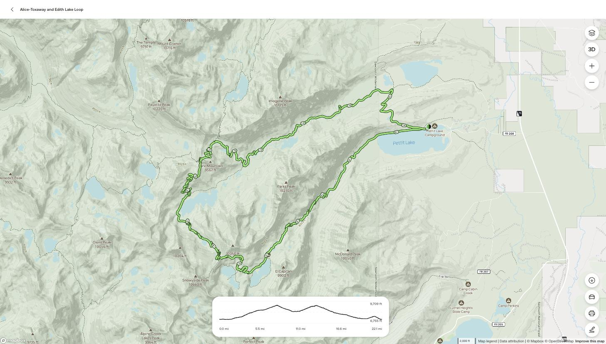
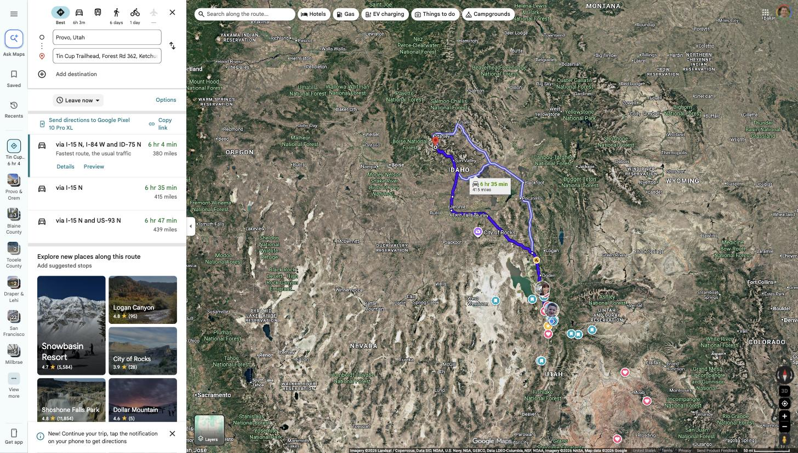

The Plan, Day by Day
Departure and return days are confirmed by Alex. The on-trail camps are the standard way this loop is hiked and match our 4-day window — marked tbd until Alex confirms at pack check.
Drive up, hike in depart confirmed
Leave the church at 6:00 AM. Drive 380 mi (~6 hr + stops) to Tin Cup Trailhead at Pettit Lake — arriving early afternoon. Self-issue the free wilderness permit at the trailhead, then hike in ~6 mi to Alice Lake (or Twin Lakes, one mile farther — a July trip report says Alice gets crowded and Twin Lakes is the better night-one camp).
Over the Divide to Toxaway tbd
Climb from Alice past Twin Lakes to the Alice–Toxaway Divide, then descend to Toxaway Lake. Shorter mileage day — time for swimming, fishing, and a fireside. Toxaway is the staging camp for the next morning's big climb.
Sand Mountain Pass & the long descent tbd
Sunrise switchbacks up Sand Mountain Pass (~9,400 ft) — reviewers call the short off-trail spur to the ridge top the best view of the whole loop. Then mostly downhill past Edith Lake and Farley Lake. Camp low, or push all the way out if the group is strong.
Hike out, drive home return confirmed
Finish the last ~4–5 mi down the Farley Lake valley and the Pettit Lake cutoff back to the cars. Lunch in Ketchum or Twin Falls, home by evening — no night driving, which is exactly why Alex added the fourth day.
The Trail
Rated Hard · 4.8★ from 282 AllTrails reviews · elevation runs 6,755 → 9,709 ft. The loop links Petit Creek, Alice Lake–Redfish Lake, Edith Lake, Yellowbelly Lake, and Petit Lake Cutoff trails — counterclockwise from Pettit Lake.

Know before we go
- Permit: free — but groups of 8+ must contact the Forest Service in advance; trailhead self-issue only covers smaller groups. Group cap is 12 people. Details on the pack check page.
- Parking: a recent report says Pettit Lake TH charges $10 — bring cash. Lot fills by 9 AM; we arrive afternoon, so expect overflow parking.
- Water: lakes and creeks the whole way — filters yes, but carrying capacity ~1 gal each per Alex.
- Fires: Sawtooth Wilderness has fire restrictions in many zones — assume stoves only until Alex confirms fireside plans.
The Drive
380 miles, about 6 hours door-to-trailhead via I-15 N → I-84 W → US-93 N → ID-75 N (fastest of three route options per Google Maps). Leaving at 6:00 AM puts us at the trailhead around 1:00–1:30 PM with two stops.

| Leg | Miles | Route | Fuel & food notes |
|---|---|---|---|
| Provo → Tremonton | ~95 | I-15 N, merge I-84 W | Leave with a full tank. Easy off-ramps in Brigham City / Tremonton if needed. |
| Tremonton → Burley | ~110 | I-84 W over Sweetzer Summit into Idaho | Snowville is the last Utah gas; long empty stretch follows. |
| Burley → Twin Falls | ~40 | I-84 W → US-93 N | Main stop: gas + restrooms + fast food, ~3 hr in. (Perrine Bridge overlook is 2 min off route.) |
| Twin Falls → Ketchum | ~85 | US-93 N → ID-75 N through Shoshone, Bellevue, Hailey | Last reliable gas: Hailey / Ketchum. Top off every vehicle here. |
| Ketchum → Tin Cup TH | ~50 | ID-75 N over Galena Summit (8,701 ft), left on Pettit Lake Rd | No services. Big scenic overlook at Galena Summit — worth 5 minutes. |
Who's Going
All Young Men, all quorums. Dads highly encouraged. Led by Alex R.
| Young Man | Dad / leader | Status | Notes |
|---|---|---|---|
| Ollie | Jed | confirmed | "Expect the unexpected." |
| Max H. | Jacob H. | confirmed | Jacob driving his 12-passenger van |
| Caiden P. | JC P. | confirmed | |
| Maverick S. | — | confirmed | |
| McCoy S. | — | confirmed | |
| Cole V. | — | planning | Out of town Jul 29 — needs separate pack check with Alex |
| Max L. | — | likely | "More than likely" per his mom |
| Leader — Alex R. | confirmed | Trip organizer & logistics | |
Gear Checklist
Straight from Alex, plus two items suggested by July trip reports. Red = must-have. Meals are expected to be provided (Mountain House / Peak Refuel style) — every ounce matters.
Recent Trail Intel
From AllTrails reviews this summer — the freshest conditions we have.
"Bring creek crossing shoes… pass to Edith Lake has some snow fields to cross over! Alice is very busy, Twin Lakes may be the better option to camp at for night 1." — snow should keep shrinking before Aug 10.
"Trail was in great shape. Some downed trees, but crews were clearing them out. Some snow patches up high and near Sand Mountain."
Trailhead parking full by 9 AM · lots of scree, sturdy shoes recommended · "tons of water filtering opportunities" · camps at the far side of Toxaway called out as plentiful.
Only two standing alerts — the free self-issue permit, and dogs-on-leash rules. No fire or trail closures currently posted. Worth re-checking the week we leave — it's fire season.
Open Questions for Alex
- Day 1: do we hike to Alice/Twin Lakes the same afternoon, or camp near the trailhead and start fresh Tuesday?
- Which lakes are the planned camps each night? (Alice vs Twin · Toxaway · third night?)
- Vehicles: Jacob's van seats 12 — how many total are going, and who else drives?
- Thursday: hike out in the morning, or Wednesday night? Realistic home-arrival time for parents?
- Tent assignments — who owns backpacking tents, and who's sharing?
- Food: are the jet-boil meals confirmed as provided, and what do boys bring for trail lunches/snacks?
- Any boys still un-confirmed that we should nudge? (Justin, Jacob M., Oliver A.?)
- Permit & group size: Sawtooth caps groups at 12 and requires Forest Service contact for parties of 8+ — do we register ahead and/or split into two trail groups? (Stanley Ranger Station: 208-774-3000)